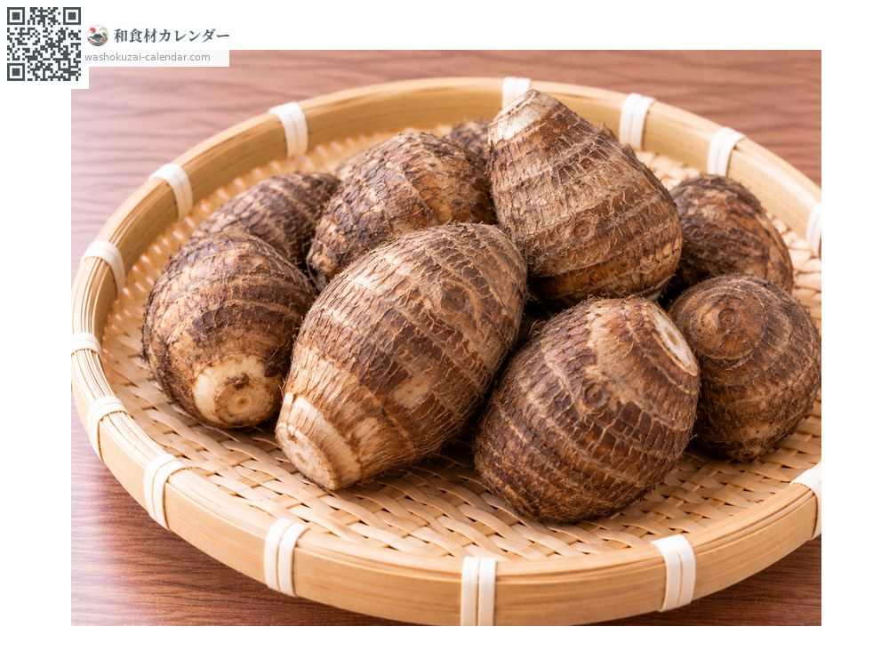
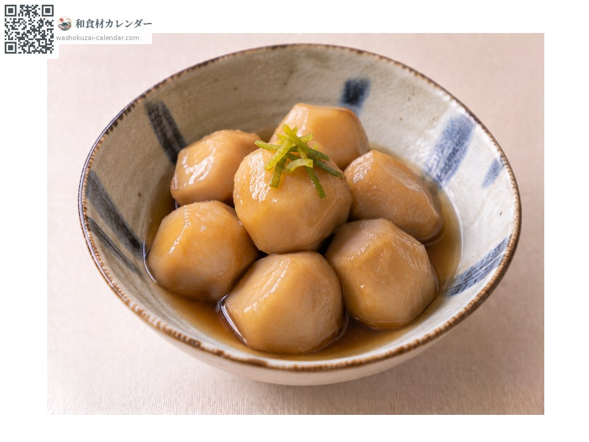
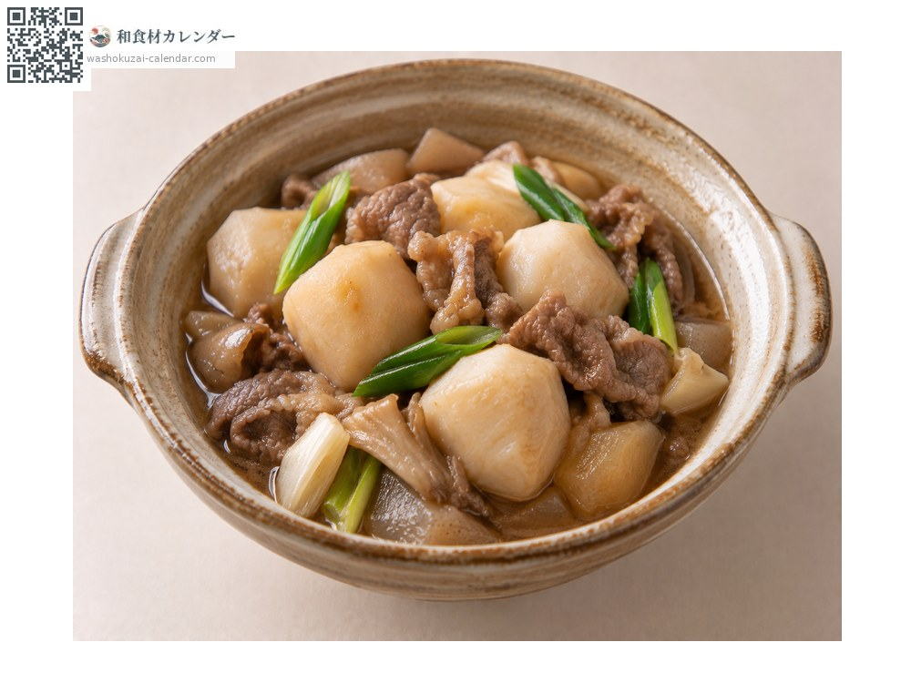
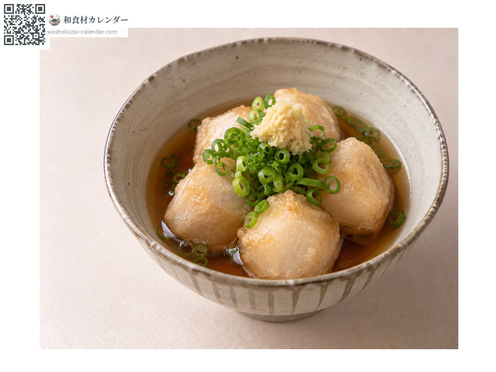
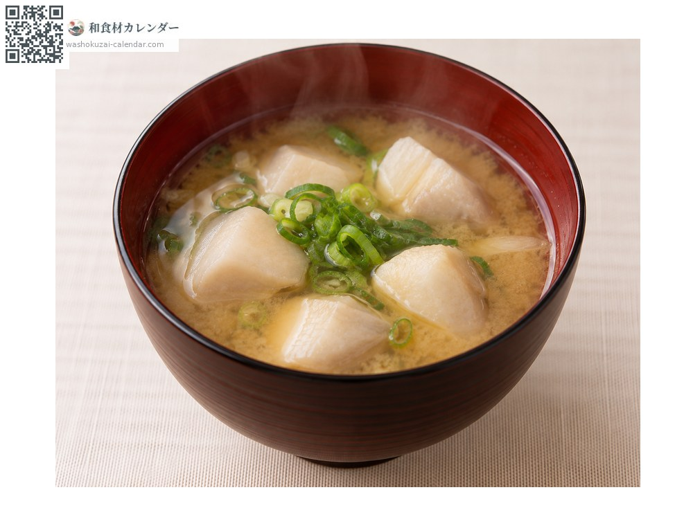

野菜
サトイモ
さといも
別名・別表記里芋、satoimo
旬は1月・10月・11月・12月

旬の時期
1月
2月
3月
4月
5月
6月
7月
8月
9月
10月
11月
12月
旬出回り
調理法

煮っころがし
甘辛く煮る。

いも煮
牛肉や豚肉と。東北の郷土料理。

揚げ出し
素揚げして出汁を張る。

味噌汁
具として。
選び方
泥付きで湿り気があるもの。縞模様がはっきりし、硬く締まっているもの。
保存方法
低温と乾燥に弱い。泥付きのまま新聞紙に包んで常温の冷暗所へ。
主な産地
豆知識
ぬめりは煮汁を濁らせるため、塩もみや下茹でで取ることが多い。ただし旨みも含まれる。